How to put IEMAS live: set up the server PC once, install the IEMAS Agent on each employee's PC, connect the two, and learn what the alerts look like before the first real customer email arrives.
Install Docker, fill in one settings file, double-click Build-IEMAS.
≈ 30 min · onceMailboxes, employees, managers, working hours.
≈ 30 min · onceCopy the Agent app, point it at the server, register, approve.
≈ 5 min per PCWhat employees see, and a live simulator of every pop-up.
≈ 10 min per personOne server PC runs IEMAS in Docker. It reads the company mailboxes, decides which emails are customer inquiries, and tracks every inquiry until the employee confirms it is resolved. Each employee's PC runs the small IEMAS Agent app, which receives the pop-ups. Managers only get an email when an inquiry is escalated.
Who: IT administrator. Use an always-on Windows PC or server with at least 8 GB RAM and a fixed IP address on the office network (in this guide, 172.16.2.68).
Download Docker Desktop for Windows from docker.com, install it with the default WSL 2 option, restart, and start Docker Desktop once. In Docker Desktop's Settings → General, tick Start Docker Desktop when you sign in so IEMAS comes back after a reboot.
Install Git for Windows, then in a command prompt:
cd C:\ git clone https://github.com/arnielmontero/Intelligent-Email-Monitoring-Alert-System-v2.git IEMAS cd IEMAS
Later updates are git pull followed by double-clicking Build-IEMAS.bat again.
Copy .env.example to .env in the same folder and open it in Notepad. Fill in these lines:
| Setting | What to put |
|---|---|
| POSTGRES_PASSWORD | A long random password for the database. |
| JWT_SECRET | Random, at least 32 characters. IEMAS refuses to start with a short one. |
| AGENT_JWT_SECRET | Another random value, different from JWT_SECRET. |
| CREDENTIAL_ENCRYPTION_KEY | Random 32 bytes in base64. Encrypts the stored mailbox passwords. Keep a copy safe: losing it means re-entering every mailbox password. |
| BOOTSTRAP_ADMIN_EMAIL / _PASSWORD | Your own CMS login. Created on the first start only. |
| OPENROUTER_API_KEY | The AI key from openrouter.ai/keys. |
| DOMAIN | The server's IP address, for example 172.16.2.68 (or a DNS name if you have one). |
| CORS_ORIGIN | https://172.16.2.68:8443 (the address people open the CMS on). |
| ASPNETCORE_ENVIRONMENT | Leave as Production. |
To make the random values, run this in PowerShell once per secret and paste the result:
[Convert]::ToBase64String((1..48 | % { Get-Random -Max 256 }) -as [byte[]])
For CREDENTIAL_ENCRYPTION_KEY use 1..32 instead of 1..48.
It builds and starts the database, the API, the CMS website and the HTTPS proxy, then checks each one. The first build takes 5–10 minutes. It ends with Done. and lists anything that failed. A full log is written to the logs folder.
PROXY_HTTP_PORT=80 and PROXY_HTTPS_PORT=443 to .env.Employee PCs must reach the server on port 8443. In PowerShell as administrator:
New-NetFirewallRule -DisplayName "IEMAS HTTPS" -Direction Inbound -Protocol TCP -LocalPort 8443 -Action Allow
From any PC open https://172.16.2.68:8443. The browser warns about the certificate the first time because the server made its own; choose Advanced → Continue. Log in with the admin email and password from .env.
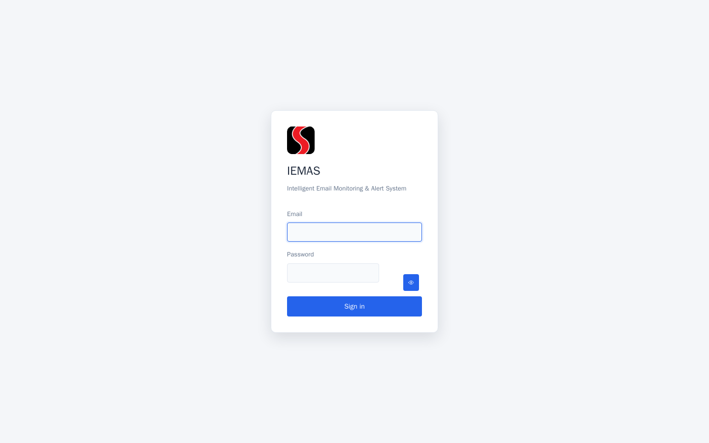
Add a daily Windows Task Scheduler job that runs scripts\backup-database.sh from Git Bash. Backups land in the backups folder; copy them off the server.
Who: IT administrator, with the list of mailboxes, employees and managers. System → Setup Checklist shows what is still missing; work down it until every line is green.
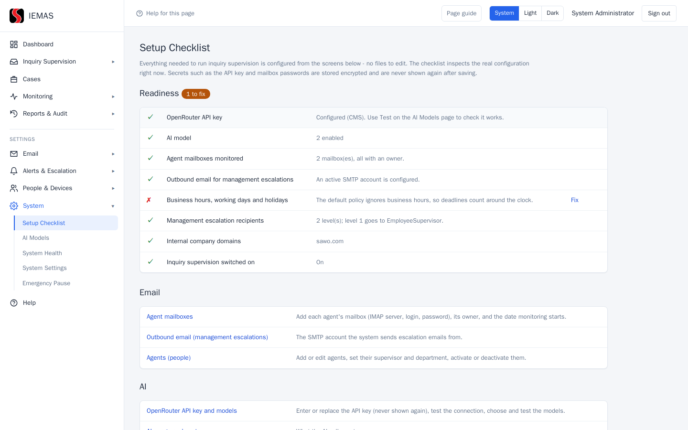
People & Devices → Employees. One row per person, with the company email address they will register the Agent with.
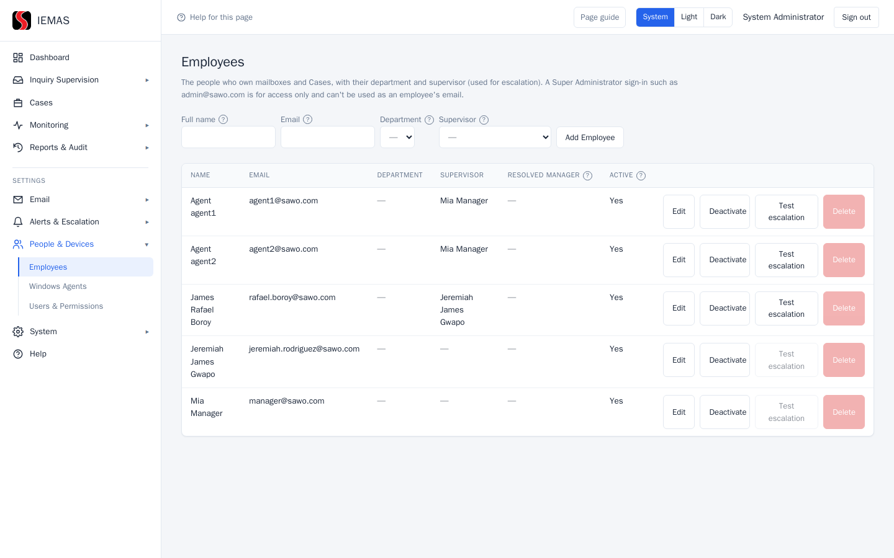
Email → Email Accounts → Add. Enter the mailbox address, the IMAP server and its password, and choose the owner: the employee whose PC gets the alerts for this mailbox. Press Test connection and make sure the Sent folder is found; IEMAS needs it to see the replies.
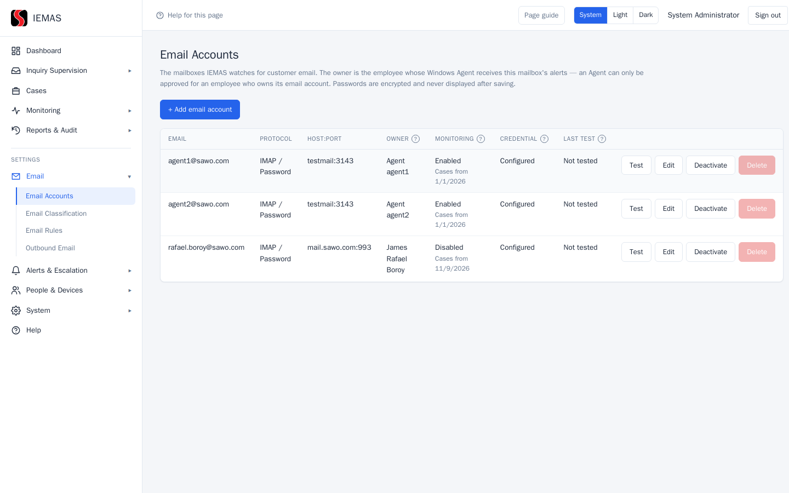
Email → Outbound Email. One SMTP account IEMAS uses to send escalation emails. Test connection checks the login without sending anything. After the next step, use Test escalation on an employee's row (Employees page) to send a real sample to their manager.
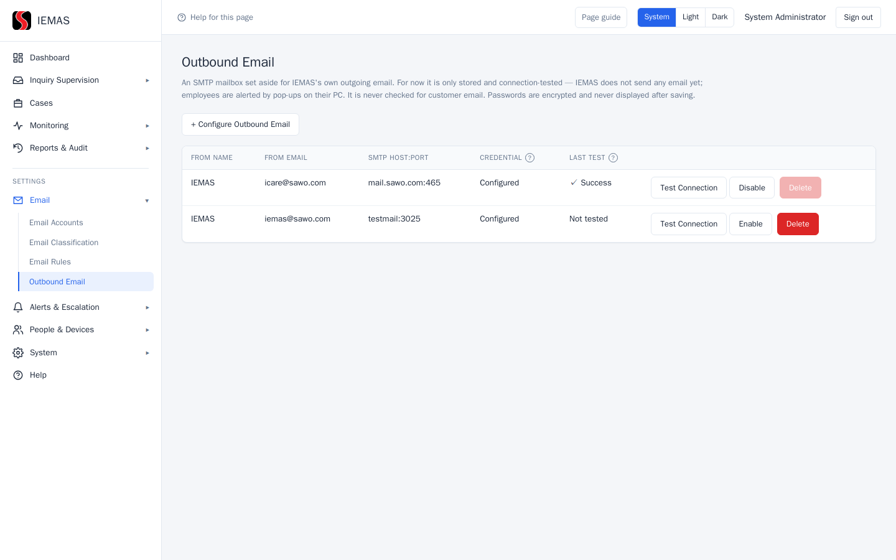
Managers are added as employees too. On Employees, set each person's Supervisor: escalation emails go to the supervisor. To reach a whole team instead (for example "Sales managers"), create it under Alerts & Escalation → Escalation Groups and name it in Escalation Policies.
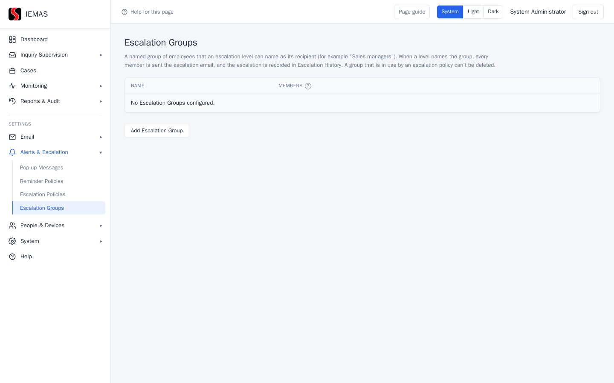
Alerts & Escalation → Reminder Policies → Default. Set the office hours, time zone, whether weekends count, and the public holidays. Every deadline (first reply within 4 working hours, reminders, escalation, the 5-day resolution target) counts only these hours.
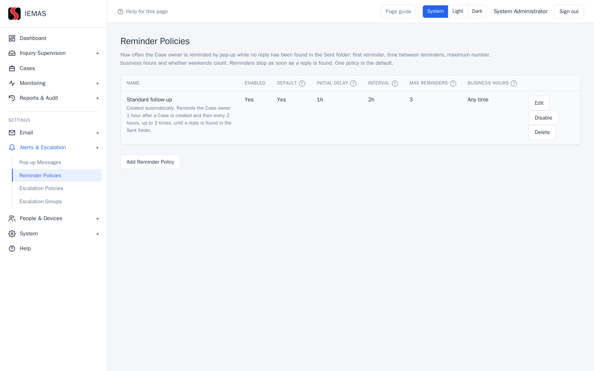
System → System Health. All background jobs should show a recent successful run. In System → System Settings, set CMS web address to https://172.16.2.68:8443 (the "Open case" button in escalation emails uses it), and make sure TEST MODE: count hours as minutes is off.
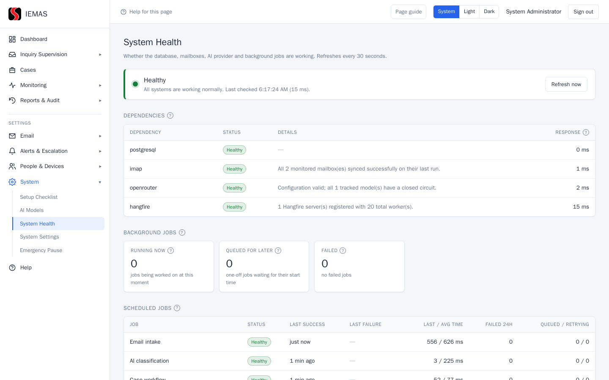
Who: IT or the employee, with an administrator ready to approve in the CMS. About 5 minutes per PC.
In a command prompt:
winget install Microsoft.DotNet.DesktopRuntime.8
Or download .NET Desktop Runtime 8.0 – Windows x64 from dotnet.microsoft.com.
Create the folder C:\Program Files\IEMAS Agent and copy IemasAgent.exe into it from the server's windows-client\agent-release folder (or a shared network folder). It is a single file. Start it once; it puts an IEMAS icon next to the clock.
Click Settings. Set Server URL to https://172.16.2.68:8443, tick Allow self-signed certificates (the server uses its own certificate on the office network), leave Start with Windows ticked, and press Save.
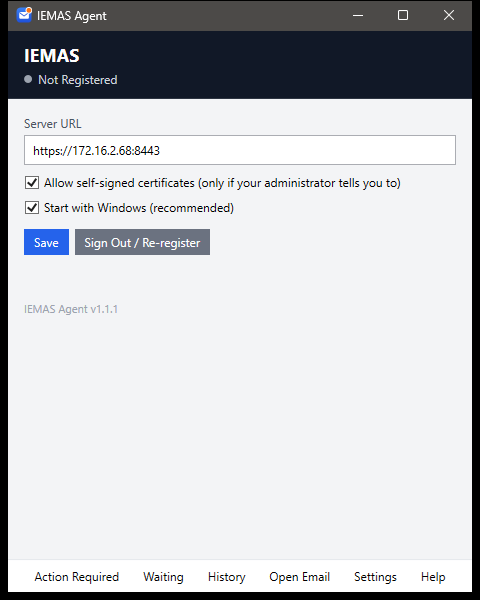
On the register screen enter the employee's company email (the mailbox IEMAS watches for them). The PC name is filled in. Press Register. The status changes to Awaiting Approval.
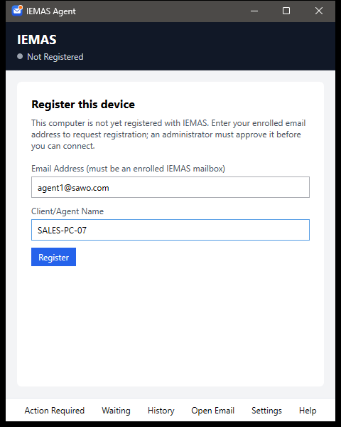
Administrator: People & Devices → Windows Agents. The new PC is listed as Pending. Choose the employee who uses it and press Approve. Within a few seconds the Agent turns ● Connected by itself; nothing to copy or type.
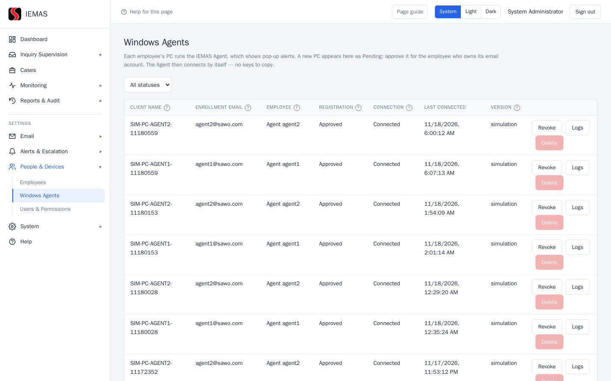
IemasAgent.exe, start it again. Registration is kept.The Agent shows the inquiries that need you. You still answer customers in Outlook. When the customer's request is fully handled, you confirm it in the Agent.
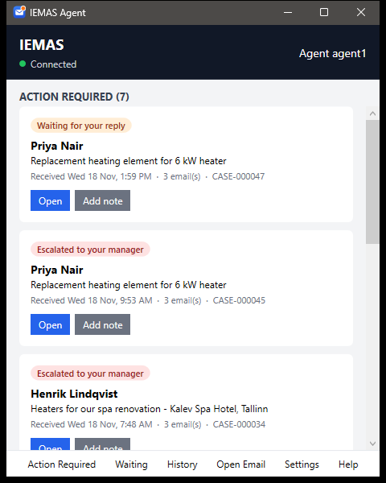
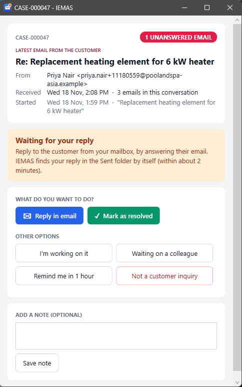
| Button | When to use it |
|---|---|
| ✉ Reply in email | Opens Outlook. Reply to the customer's email from the same mailbox. IEMAS finds your reply by itself within about 2 minutes. |
| ✓ Mark as resolved | The customer's request is fully handled. A first reply alone does not close an inquiry. |
| Yes, it's resolved / Not resolved yet | Shown when IEMAS thinks the conversation is finished. IEMAS never closes an inquiry by itself; you decide. |
| I'm working on it | Shows you picked it up. Reminders continue until your reply is found. |
| Waiting on a colleague | You need information from someone inside the company first. It moves to the Waiting tab and you get more time. |
| Remind me in 1 hour | Pops it up again in an hour. Deadlines still apply. |
| Not a customer inquiry | For emails flagged by mistake (spam, newsletters, personal mail). Closes it. |
| Add a note | A short note for your manager. Never sent to the customer. |
These are the real pop-up designs and wording the Agent uses. Press a button to see one appear in the bottom-right corner, or play one inquiry from start to finish. Pop-ups stay on top until you act on them, even with Windows "Do not disturb" on, and play a short sound.
Follows one customer email through the default timings, about 4 seconds per step.
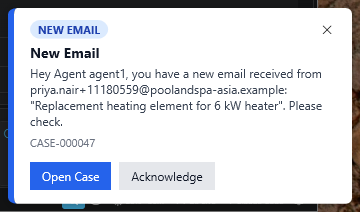
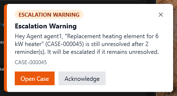
Above: two real pop-ups captured from the Agent during the live test, for comparison with the simulator.
Sent only to the supervisor or escalation group, only when an inquiry stays neglected after the reminders. It has the facts a manager needs to step in, and a link to the inquiry in the CMS.
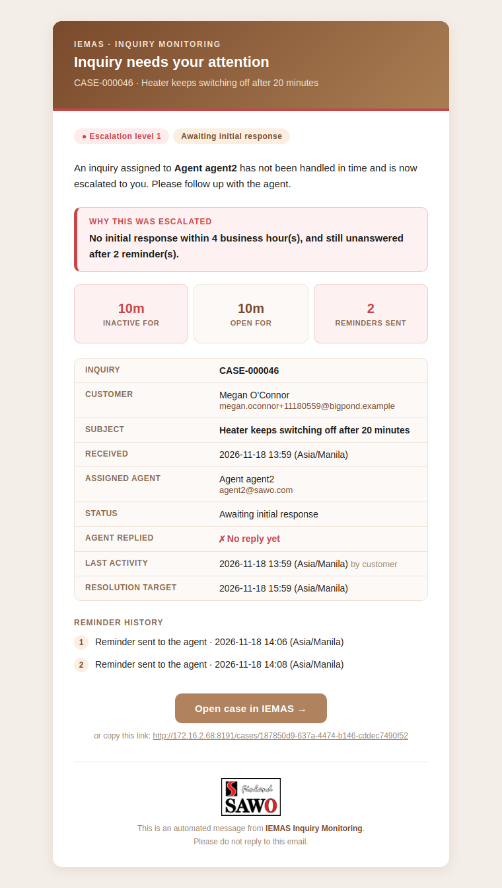
Tick each line as you finish it. The ticks are saved in this browser only.
Check the Server URL in Settings (https, port 8443) and that "Allow self-signed certificates" is ticked. From the PC, open https://172.16.2.68:8443 in a browser: if that fails too, check the server's firewall rule and that Docker Desktop is running on the server.
The email must belong to an employee in the CMS whose mailbox IEMAS watches. Check People & Devices → Employees.
Wait 2 minutes for the Sent-folder check. Reply to the customer's own email (not a new email) from the mailbox the customer wrote to. If you answered by phone, open the inquiry and use Mark as resolved or add a note.
Allow a couple of minutes. Newsletters, auto-replies and internal mail are filtered out on purpose. Emails the AI was unsure about wait for a supervisor in the Review queue (Email → Email Classification).
The tray icon's dot must be green. Pop-ups go to the owner of the mailbox the email arrived in. Pop-ups missed while the PC was off are shown when it connects again.
Docker Desktop must be running. Double-click Build-IEMAS.bat again; it starts everything and reports what is wrong.